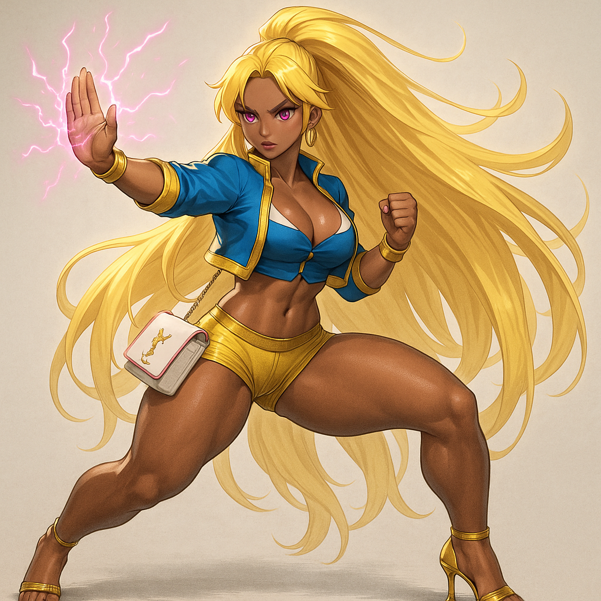
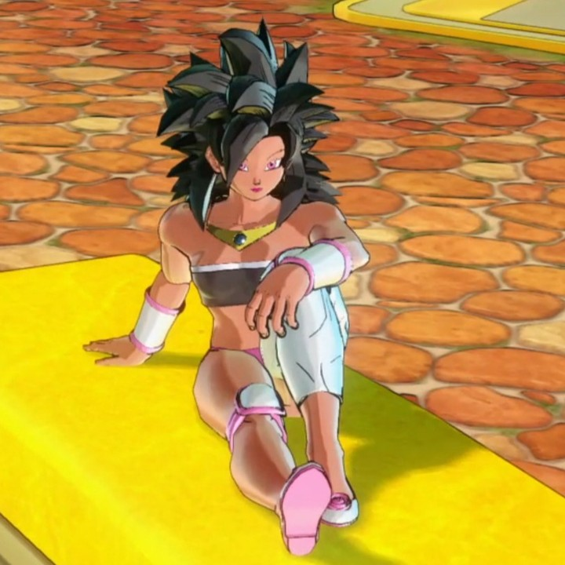

Wargirl



Wargirl is the youngest of the three Victoria sisters. Once known as The Pretty Wargirl, she has transformed from a reckless, approval-seeking fighter into a stylish and feared powerhouse whose elegance hides terrifying strength.
She is secretly defined by two forces: her fear of losing her body — and her love for the sister who will never let her go.
🌱 Origins
Wargirl was born after Victoria Chaser and Victoria Black, often treated as the impulsive baby of the family. While her sisters rose quickly through the Time Patrol, she struggled with discipline and spent more time styling outfits than running missions.
Her first real job was as a waitress at the Conton City Club, a red-and-yellow bar in the business district. Known more for her beauty and playful energy than her combat record, she quietly resented being seen as ornamental.
⚔️ Rise as The Pretty Wargirl
Determined to prove herself, Wargirl began secretly training. She fought Majin Buu alone and barely survived, then targeted Turles.
Knowing she couldn’t win head-on, she and Harmony, Goten, and Kid Trunks staged an ambush. Harmony distracted him while Wargirl struck from behind, unleashing a decisive burst of power that ended the fight. It shocked the entire patrol and marked her arrival as The Pretty Wargirl — beautiful, bold, and brutally effective.
💔 The Broly Raid — Veronica’s Entrance
During the Broly raid, The Pretty Wargirl underestimated him and was blasted across the battlefield, left gravely injured. She was found and revived by Veronica, a human fighter wielding a science-powered suit and purple electric gauntlets.
It was the first time anyone outside the sisters had risked their life to save her. Veronica’s courage stunned her, though Wargirl slipped away — never realizing Veronica had quietly fallen in love with her.
The Night Victoria Black Needed Her
After Turles’ death, Victoria Chaser retired from combat to become an attorney, leaving Wargirl as the family’s main PvP fighter. Wargirl embraced the responsibility without hesitation, carrying their reputation and protecting Harmony as if she were blood.
During this time, Wargirl noticed something changing in Victoria Black. Black was always radiant, confident, and commanding—but she began to seem lonely. Her smiles grew forced, her laughter thin. She would linger near Wargirl, then pull away, pretending nothing was wrong.
Wargirl grew worried. When she pressed for answers, Black brushed her off, then quietly cried where she knew Wargirl could hear. Finally, Wargirl cornered her in private and demanded to know what was wrong.
Black turned to her with tears in her eyes and whispered:
- “I just… I just really need someone right now but…”
Wargirl pushed further, and Black looked straight into her eyes and confessed:
- “I… I need you.”
She pulled Wargirl into a trembling kiss. Wargirl froze. She didn’t know what to do—this was her older sister, her leader. But Black’s eyes were full of pain, and her voice shook as she pleaded:
- “Please… I’m so alone.”
Something inside Wargirl broke. Her instinct to protect her overrode everything else. She kissed her back, not as a tease but as if trying to hold her together. Black whispered her loneliness, her despair, and her longing to feel good again. Slowly, she guided Wargirl down, trembling and tearful.
Wargirl didn’t resist. She understood. Victoria Black had spent years sacrificing her own happiness to protect everyone else. If this was what she needed to finally rest, then Wargirl would be the one to give it to her.
Black passed out from the release, tears still on her cheeks. Wargirl carried her to bed, then sat at the foot of it, staring in silence, mind spinning. She had protected Victoria Black a thousand times—but never like this. The stress of it all finally hit her, and she fell asleep there at the foot of the bed.
Significance:
- Wargirl secretly became Victoria Black’s source of comfort and release.
- This event explains why Wargirl often shields Victoria Black from others, even off the battlefield.
- It marks the start of a complicated hidden bond between them that quietly influences all of Wargirl’s later decisions.
⚰️ Kidnapping & Chaser’s Death
Not long after, while walking home from work, Wargirl was kidnapped by the Gas Mask Clan. Harmony, Goten and Kid Trunks tracked her to their lair. Harmony carried her while Gotenks fought to protect them, but they were surrounded — until Victoria Chaser arrived.
Chaser sacrificed her life to save Wargirl. Victoria Black and Binary later annihilated the entire clan and their planet in retaliation.
💞 The Secret Bond with Victoria Black
Before the kidnapping, Wargirl sometimes comforted Victoria Black during her depressive spells. These moments were soft, physical, and framed as emotional support — but secretly intimate.
After Chaser’s death, Victoria Black became possessive. She feared losing Wargirl too and decided if she could give her everything — emotionally and physically — she would never wander into danger again.
At first, Wargirl submitted out of guilt. Then she became used to it. Then she began loving it.
- In her SSJ3 form, Wargirl is a dominant lover.
- Victoria, usually the strongest in any room, submits to her younger sister — enjoying the safety of surrendering to her.
- Wargirl gets to vent her frustration and feel valued, while Victoria gets the mind-breaking release she craves.
- Victoria has not been with a man in years, addicted to the release only Wargirl brings.
Wargirl sometimes pushes her away when not in the mood, but never leaves — afraid if she did, she would lose the only person who loves her this completely. Victoria would burn the universe before letting anyone else have her. This bond is now the greatest obstacle to Veronica’s dream of being with Wargirl.
🌌 The Portal — First to Enter the Marvel Universe
After the kidnapping and Chaser’s death, Wargirl trained relentlessly, becoming restless with the limits of the Time Patrol. Harmony had been secretly modifying her experimental transporter door to breach entire realities, and Binary was arguing to be the first to use it.
But when Harmony stepped away and Binary got dragged off to train with Victoria Black, Wargirl seized her chance.
While watching her idol Captain Marvel on TV, Wargirl smiled, slipped on her gold YSL heels, grabbed her white YSL purse, and charged through the portal. She became the first of the Victoria Sisters — and the first Time Patroller — to enter the Marvel Universe.
There, she immediately drew the attention of Ms. Marvel’s team and later clashed with Doctor Strange in a reality-warping battle — marking her as a multiversal fighter.
🩸 Combat Psychology — The Ginyu Trauma
Wargirl’s fighting style is defined by one buried trauma:
> She is terrified of losing her beautiful body to bodychangers.
During the Ginyu Force raids, Ginyu targeted her body specifically — praising its "perfection" and attempting Body Change multiple times:
- Captain Ginyu Is Stopped From Stealing Wargirl
- The COM stops Captain Ginyu From Stealing Wargirl
- Are all Body Changers weird like this?
Though she dodged every attempt, the fear scarred her. Since then, she’s become cold and lethal toward any enemy with possession, parasitic, or body-stealing powers. She fights with speed, agility, and instant-kill aggression, refusing to let anyone even touch her.
Even Victoria Black watches her closely during these fights, knowing how deeply they shake her.
💋 Public Slip-Ups
Their private bond sometimes leaks through. After SSJ3 Wargirl defeated Shaggy, Victoria visited the Conton City Club to congratulate her. She gripped Wargirl’s waist from behind and whispered "good job"… with her fingers slipping under Wargirl’s high-rise, low-waisted shorts.
Wargirl escaped only when a news alert reported Hit attacking the Red Ribbon Army facility. As Victoria left, she teased, > "I’ll be needing your help to sleep tonight."
Everyone heard. Everyone knew. Wargirl was mortified — and secretly flattered.
🌟 Present Day — SSJ3 Wargirl
Wargirl has fully shed her "Pretty Wargirl" persona. She is now SSJ3 Wargirl: powerful, precise, feared, and impossibly fast. She balances her time bartending and hosting at the Conton City Club while serving as one of the strongest female Saiyans in the multiverse.
💅 Style Over Power — Fashion First
Few realize that Wargirl had already reached Super Saiyan God Super Saiyan (SSGSS) long ago, even while she was just a PQ farmer. Her power level has long surpassed SSJ3 — but she chooses to fight in SSJ3 form because it is fashionably desirable. The flowing golden hair, dramatic aura, and wild silhouette amplify her glamorous presence.
Fashion is her main priority. She is rarely seen without:
- Gold YSL heels (with the logo forming the heel structure)
- A white YSL purse with pink edges and strap
- Flawless makeup, polished nails, and perfectly styled hair
For Wargirl, fighting isn’t just about winning — it’s about being unforgettable.
🌀 Known Alter Egos
- DiscoGirl — A flashy, energetic persona Wargirl uses during city festivals and undercover club missions.
- Ice Princess — A cold, elegant persona Wargirl created to infiltrate elite enemy circles.
Category:Characters Category:Saiyans Category:Allies Category:Victoria Family